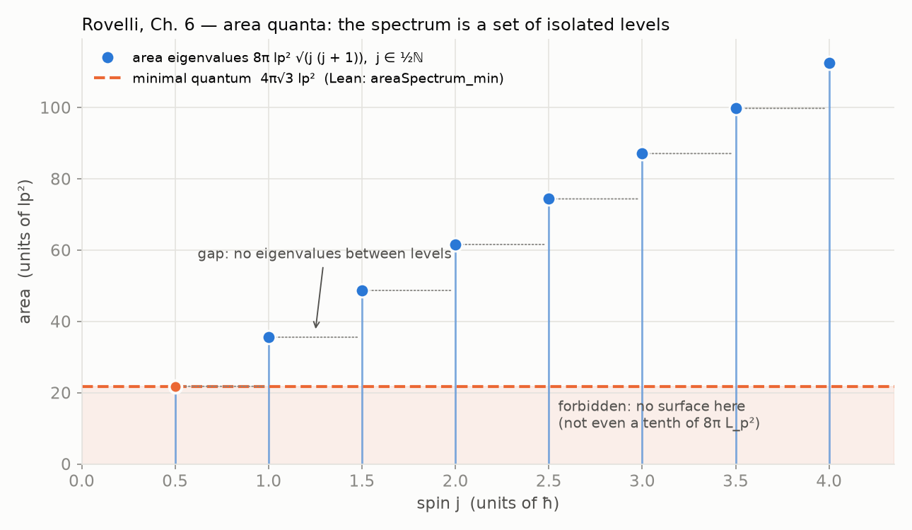
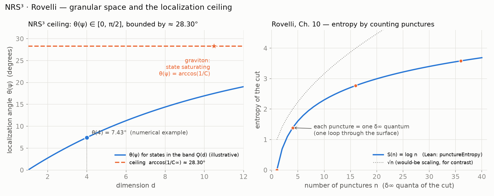

NRS³ · Rovelli — area quanta and the localization ceiling
In loop quantum gravity (Rovelli, La realidad no es lo que parece, Ch. 6)
a surface can only have area A(j) = 8 π γ lp² √(j (j + 1)) with
j ∈ ½ ℕ: a ladder of isolated levels, with nothing — not even a tenth of
8 π L_p² — in between. In NRS³ this granularity is dimensional uncertainty: the
localization angle θ(ψ) of a state is capped by
arccos(1/C∞) ≈ 28.30°, and the graviton is the state that saturates the cap.
The area spectrum: isolated levels (units 8π lp², γ = 1)
θ(ψ) against the NRS³ ceiling
Results
| Statement | Lean |
|---|---|
A(j) = 8 π γ lp² √(j (j + 1)) | areaSpectrum |
separated levels: 0 ≤ j ≤ k gives A(j) ≤ A(k) | areaSpectrum_mono |
every level with j ≥ 1/2 dominates 4 π √3 γ lp² | areaSpectrum_min |
| entropy of a cut = logarithm of its puncture count | punctureEntropy |
θ(ψ) ≤ arccos(1/C), the universal ceiling ≈ 28.30° (declared) | theta_le_ceiling |
| area quanta are counted δ∞ quanta (declared) | areaQuanta_are_defectQuanta |
| the graviton saturates the ceiling (declared) | graviton_saturates_ceiling |
In NRS³
1. Foam / granularity = dimensional uncertainty: the granularity of quantum
space is read as the dimensional uncertainty quantified by C_Nava(d) and
θ(ψ) ∈ [0, π/2]; numerically θ(4) = 7.43° against the ceiling
arccos(1/C∞) ≈ 28.30°.
2. Area quanta ↔ δ∞ quanta: the discrete LQG spectrum corresponds to counting the δ∞
defect quanta of nrs3-defect-curvature; a surface is a cut whose entropy counts
its quanta (punctures).
3. The graviton: in LQG it is the quantum excitation of the gravitational field — the
quantum Faraday lines of Ch. 6; in NRS³ it is the state of maximal localization permitted by
the ceiling, the top of the band Ϙ(d) of the base theorems D44/D46.


Source text: Carlo Rovelli, La realidad no es lo que parece (2017), Ch. 5 (quantum space-time), Ch. 6 (area and volume quanta, spin networks) and Ch. 10 (black-hole entropy by counting punctures). The bridge axioms in nrs3-rovelli-lqg are declared physical premises, as in the rest of the NRS³ series.